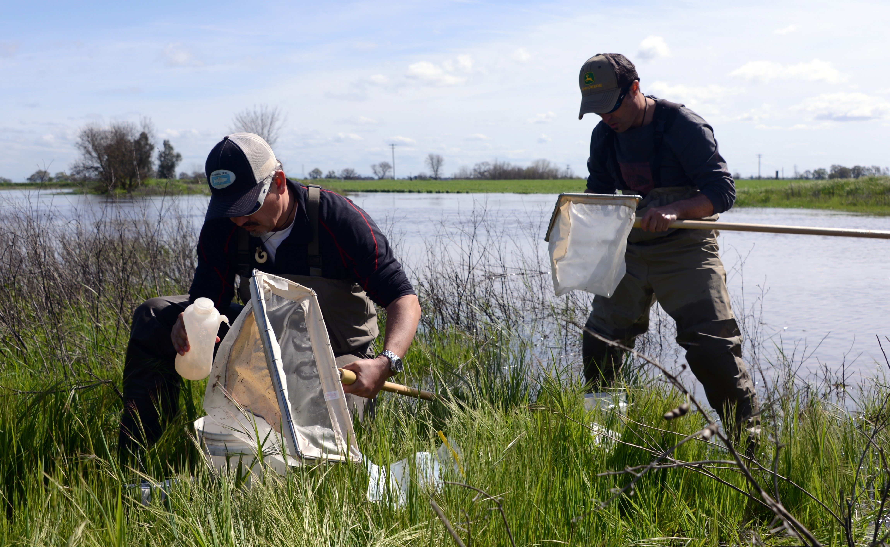

VIERS AWARDED GRANT FOR ASSESSING THE BENEFITS OF
SATELLITES FOR WATER QUALITY
June 15, 2020
By Leigh Bernacchi
Summertime means fun in the water. As temperatures increase, algal blooms may grow in freshwater and marine ecosystems. Some algae are natural and life-giving, while others are the result of life out of balance and can have harmful effects. Consisting of bacteria and tiny plankton, they arise quickly and alter the ecosystem by consuming available oxygen, killing fish. They also pose a human health risk as some of the algal blooms emit toxins—including neurotoxins deadly to pets and harmful to people. Detecting algal blooms from space is one way to prevent exposure. Analyzing how people react to harmful algal blooms in another.
Resources for the Future and NASA partnered to evaluate the socioeconomic benefits of satellites. The Valuables program quantifies the benefits of using satellite data in decisions that improve socioeconomic benefits for people and the environment, including water quality.
In an innovative and cross-disciplinary remote-sensing approach, UC Merced Professor Josh Viers aims to develop a model that describes how lake visitors in California adjust their recreation choices when outbreaks of harmful algal blooms are announced. Viers also serves as Associate Dean for Research in the School of Engineering and Campus Director of the Center for Information Technology Research in the Interest of Society.
This project will improve our current understanding of how early warning systems supported by satellite data allow recreators to divert their visits away from water bodies currently experiencing a bloom, and instead visit un-impacted sites, thereby increasing the overall enjoyment of water-based recreation activities, reducing the risks of adverse health effects, and mitigating the regional economic impacts associated with lost visitation days. “The important breakthrough in this research will be to put a dollar value on the economic benefit of information technology applied to environmental problems that directly affect things we value, like recreation and water quality,” said Viers.
Resources for the Future and NASA selected three research teams for grants totaling $300,000. Economist Stephen Newbold of the University of Wyoming is leading the transdisciplinary team working on water quality management. The project team includes Sarah Lindley and Shannon Albeke (University of Wyoming), Joshua Viers (University of California, Merced), Robert Johnston (Clark University), and George Parsons (University of Delaware).
Watch a video interview with Newbold to learn more about how the team is designing impact assessments.
The California Department of Fish and Wildlife encourages anglers and swimmers to report any algal bloom sightings. Learn more about harmful algal blooms from the California Water Quality Monitoring Council.
Location: Cosumnes River, California
With his team, Josh Viers surveys water quality and quantity in the California Delta.